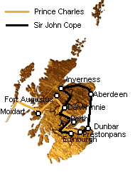

General Cope's Travels
Pérégrinations du Général Cope
Author unknown
Tune - MélodieUnknown, replaced here by one of the "Killiecrankie" tunes
Sequenced by Christian Souchon

Prince Charles's and John Cope's routes before Prestonpans
|
To the song:
Taken from the appendix of "Jacobite songs" to Alexander McDonald's "Interesting and faithful narrative of the Wanderings of Prince Charles Stuart and Miss Flora Macdonald after the Battle of Culloden", edited by Peter Buchan . It is an imitation of Adam Skirving's "Tranentmuir" , also to be sung to one of the "Killiecrankie" tunes. |
A propos du chant:
Il est tiré de l'annexe "Chants Jacobites" au "Récit pittoresque et véridique des errances du Prince Charles et de Mlle Flora McDonald après la bataille de Culloden", publié par Peter Buchan . C'est une imitation du "Tranentmuir" d'Adam Skirving , qui se chante sur l'une des variantes de la mélodie "Killiecrankie". |

|
GENERAL COPE'S TRAVELS.
1. General Cope is now come down, [1] And all his men in order ; For to fight our noble Prince, Upon the Highland border. But when he to the Highlands came, He wearied with the ground, man ; And when he heard the Prince was there, He took his heels and ran, man. 2. From Inverness to Lochabers, [2] And there he staid a while, man, From Lochabers to Turriff went, For he was 'fraid to fight, man. From Turriff to Old Meldrum, And since to Aberdeen, man, And staid a while in Aberdeen, Encamp'd on Windmill Brae, man. [3] 3. Syne took shipping, sailed to sea, Upon a Sabbath-day, man, And at Dunbar was forced to land, For there he ran away, man, With all his force, baith men and horse, Went up to Prestonpans, man ; There they thought that they were men, But they proved to be nane, man. Source: "Jacobite Songs and Ballads" edited by Gilbert Samuel McQuoid, London, 1888, N° 93 |
LES PEREGRINATIONS DU GENERAL COPE
1. Et l'armée de Cope accourut, [1] Tous bien rangés, ces militaires, Notre Prince serait vaincu Où finissent les Hautes Terres. Mais quand il prend pied sur ces sentiers La fatigue le gagne. Quand il sait le Prince si près Il retourne vite vers les campagnes. 2. D'Inverness jusqu'à Fochabers (2] Et là, pour souffler il s'arrête. Puis de Fochabers jusqu'à Turriff, Il poursuit sa retraite. De Turriff il atteint Old Meldrum Puis la dernière étape, Aberdeen où, pour un moment, L'armée porte à Windmill Brae ses pénates. [3] 3. L'on s'apprête à prendre la mer, Et un samedi l'on embarque. Et pour prendre le Prince à revers, A Dunbar on débarque Hommes et fardeaux, poudre et chevaux. Prestonpans sur leur route Montrerait leur grande valeur, Mais se termina par une déroute. (Trad. Christian Souchon (c) 2010) |
|
[1]
General Cope
's movements before Prestonpans: Originally ordered to march from Edinburgh to Fort Augustus, Cope proceeded to Dalwhinnie where he found Prince Charles in occupation of the Corryarrick Pass,the scene of Dundee's victory in 1689. Fearing defeat, Cope refused to advance, and instead marched to lnverness, and from thence to Aberdeen, from where he sailed to Dunbar, to be routed at Prestonpans almost immediately.
From John Lorne Campbell's "Highland Songs of the '45" (1932) [2] McQuoid's version has (erroneously) "Lochabers" instead of "Fochabers". [3] Today Windmill Brae is a street of Aberdeen. |
[1] Manoeuvres exécutées par
Sir John Cope
avant Prestonpans: Au début il avait l'ordre de quitter Edimbourg pour marcher sur Fort Augustus. Il avança jusqu'à Dalwhinnie où il trouva l'armée du Prince occupant déjà le col de Corryarrick, le lieu même de la victoire de Dundee en 1689. Plutôt que de risquer une défaite, Cope refusa d'aller à sa rencontre et se dirigea au nord vers Inverness, puis de là, vers Aberdeen, d'où il redescendit par bateau jusqu'à Dunbar, pour se faire battre à Prestonpans presque aussitôt.
John Lorne Campbell dans ses "Highland Songs of the '45" (1932). [2] Le texte de McQuoid porte, et c'est là une erreur, "Lochabers" , au lieu de "Fochabers". [3] Aujourd'hui Windmill Brae est une rue d'Aberdeen. |
|
|
|